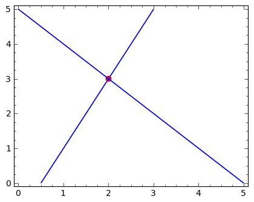
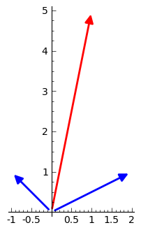

Interpretacja "wierszowa"
Rozważmy dwa równania liniowe:
System Message: ERROR/3 (geometria_ukladow_rownan.rst, line 13)
Unknown directive type "code-block".
.. code-block:: python
sage: var('x1 x2')
sage: eq1 = 2*x1-x2==1
sage: eq2 = x1+x2==5
sage: show(eq1)
sage: show(eq2)
Ich rozwiązaniem są liczby i , co łatwo
sprawdzić ręcznie lub za pomocą Sage:
System Message: ERROR/3 (geometria_ukladow_rownan.rst, line 37)
Unknown directive type "code-block".
.. code-block:: python
sage: solve([eq1,eq2],[x1,x2])
[[x1 == 2, x2 == 3]]
Każde z równań jest prostą na płaszczyźnie
Rozwiązanie układu równań leży na obydwu prostych jednocześnie. Wynika
z tego interpretacja graficzna układu dwóch równań liniowych jako
punktu przecięcia się dwóch prostych:
System Message: ERROR/3 (geometria_ukladow_rownan.rst, line 49)
Unknown directive type "code-block".
.. code-block:: python
sage: implicit_plot(eq1,(x1,0,5),(x2,0,5))+\
... implicit_plot(eq2,(x1,0,5),(x2,0,5))+\
... point((2,3),color='red',size=40,figsize=5)

asd fasfd afa
Możemy korzystając z intuicji od razu przypuszczać, że oprócz punktu,
przecięciem się dwóch prostych na płaszczyźnie może być też prosta lub
zbiór pusty. Tak więc dla układów dwóch równań mamy co najwyżej trzy
przypadki:
- Dokładnie jedno rozwiązanie.
- Brak rozwiązań - mówimy, że układ jest sprzeczny.
- Nieskończenie wiele rozwiązań.
Interpretacja kolumnowa
Rozważany układ równań
System Message: ERROR/3 (geometria_ukladow_rownan.rst, line 79)
Environment not supported! Supported environment: "matrix".
\begin{cases}
2 \, x_{1} - x_{2} &=& 1\\ x_{1} + x_{2} &=& 5
\end{cases}
można zapisać jako działania na wektorach kolumnowych:
System Message: ERROR/3 (geometria_ukladow_rownan.rst, line 88)
Unknown LaTeX command: array
\left [\array{2 x_1\\x_1}\right ] + \left [\array{-x_2 \\x_2}\right ] = \left [\array{1 \\5}\right ],
czyli:
System Message: ERROR/3 (geometria_ukladow_rownan.rst, line 95)
Unknown LaTeX command: array
x_1 \left [\array{2 \\1}\right ] + x_2 \left [\array{-1 \\1}\right ] = \left [\array{1 \\5}\right ]
Interpretacja takiego zapisu jest następująca: dla jakich wartości
liczb , suma wektorów
System Message: ERROR/3 (geometria_ukladow_rownan.rst, line 98)
Unknown LaTeX command: array
\left [\array{2
\\1}\right ]
i
System Message: ERROR/3 (geometria_ukladow_rownan.rst, line 98)
Unknown LaTeX command: array
\left [\array{-1 \\1}\right ]
jest równa
wektorowi
System Message: ERROR/3 (geometria_ukladow_rownan.rst, line 98)
Unknown LaTeX command: array
\left [\array{1 \\5}\right ].
Geometrycznie można to przedstawić w następujący sposób:
System Message: ERROR/3 (geometria_ukladow_rownan.rst, line 107)
Unknown directive type "code-block".
.. code-block:: python
sage: v1 = vector([2,1])
sage: v2 = vector([-1,1])
sage: v3 = vector([1,5])
Narysujmy te wektory na płaszczyźnie, wykorzystując polecenie arrow:
System Message: ERROR/3 (geometria_ukladow_rownan.rst, line 118)
Unknown directive type "code-block".
.. code-block:: python
sage: arrow( (0,0),v1)+\
... arrow( (0,0),v2)+\
... arrow( (0,0),v3,color='red', figsize=5)

Znamy odpowiedź - liczbami tymi są 2 i 3, ale zobaczmy jak to działa.
Eksperyment komputerowy:
W poniższym elemencie interaktywnym rysujemy grubą linią wektory
kolorem niebieskim a pożądaną wartość ich sumy
zielonym. Manipulując suwakami chcemy tak dobrać liczny
i , by suma ważona
oznaczona kolorem czerwonym pokryła się z zadanym wektorem
. Szarym kolorem zostały oznaczone wektory
i
System Message: ERROR/3 (geometria_ukladow_rownan.rst, line 143)
Unknown directive type "sagecellserver".
.. sagecellserver::
sage: v1 = vector([2,1])
sage: v2 = vector([-1,1])
sage: v3 = vector([1,5])
sage: @interact
sage: def _(x1=slider(-3,3,1/2,default=1/2),x2=slider(-3,3,1/2,default=0)):
... plt = arrow( (0,0),v1)+arrow( (0,0),v2)
... plt += arrow((0,0),v3,color='green')
... plt += arrow( (0,0),x1*v1, color='gray',width=1)
... plt += arrow( (0,0),x2*v2, color='gray',width=1)
... plt += arrow( (0,0),x1*v1+x2*v2, color='red',width=1)
... plt += line( [x2*v2,x2*v2+x1*v1],linestyle='dashed',thickness=0.5,color='black')
... plt += line( [x1*v1,x2*v2+x1*v1],linestyle='dashed',thickness=0.5,color='black')
... plt.set_axes_range(-6,6,-6,6)
... if v3 ==x1*v1+x2*v2:
... print "SUKCES!!!"
... plt.show(figsize=6)
Aby się upewnić, że jesteśmy w stanie przenieść wnioski na większą
liczbę równań, rozważmy teraz układ trzech równań:
System Message: ERROR/3 (geometria_ukladow_rownan.rst, line 171)
Environment not supported! Supported environment: "matrix".
\begin{cases}
2 \, x_{1} + x_{2} + x_{3} = 1\\
x_{1} - x_{2} = -1\\
x_{1} + x_{2} + 2 \, x_{3} = 2
\end{cases}
Ma on rozwiązanie w punkcie .
W przestrzeni trójwymiarowej , równanie liniowe
opisuje płaszczyznę. Rozwiązaniem układu równań będzie więc miejsce
przecięcia się trzech płaszczyzn:
System Message: ERROR/3 (geometria_ukladow_rownan.rst, line 187)
Unknown directive type "sagecellserver".
.. sagecellserver::
sage: var('x1 x2 x3')
sage: eq1=2*x1+x2+x3==1
sage: eq2=1*x1-1*x2==-1
sage: eq3= x1+1*x2+2*x3==2
sage: p1=implicit_plot3d(eq1,(x1,-5,5),(x2,-5,5),(x3,-5,5),color='blue',opacity=0.9)
sage: p2=implicit_plot3d(eq2,(x1,-5,5),(x2,-5,5),(x3,-5,5),color='brown',opacity=0.9)
sage: p3=implicit_plot3d(eq3,(x1,-5,5),(x2,-5,5),(x3,-5,5),color='green',opacity=0.9)
sage: p3d=p1+p2+p3+point3d([-1/4,3/4,3/4],size=12,color='red')
sage: p3d.show()
Automatyczna konwersja zapisu wierszowego do kolumnowego.
Mając układ równań w postaci równań algebraicznych w Sage, warto
nie przepisywać ręcznie współczynników a zamiast tego
wyekstrahować je z wyrażeń. Poniższy kod wykonuje te operacje,
które co prawda wyglądają odstraszająca to w rzeczywistości są do
"wyeksperymentowaia" w kilka minut.
System Message: ERROR/3 (geometria_ukladow_rownan.rst, line 210)
Unknown directive type "code-block".
.. code-block:: python
sage: v1,v2,v3 = [vector([eq.lhs().coeff(x) for eq in [eq1,eq2,eq3]]) for x in [x1,x2,x3]]
sage: v4 = vector([eq.rhs() for eq in [eq1,eq2,eq3]])
sage: v1,v2,v3,v4
((2, 1, 1), (1, -1, 1), (1, 0, 2), (1, -1, 2))
System Message: ERROR/3 (geometria_ukladow_rownan.rst, line 221)
Unknown directive type "sagecellserver".
.. sagecellserver::
sage: v1,v2,v3,v4 = (vector(QQ,(2, 1, 1)), vector(QQ,(1, -1, 1)), vector(QQ,(1, 0, 2)), vector(QQ,(1, -1, 2)))
sage: @interact
sage: def _(x1=slider(-3,3,1/4,default=1/2),x2=slider(-3,3,1/4,default=0),x3=slider(-3,3,1/4,default=0),viewer=['tachyon','jmol']):
... plt = cube(size=4, frame_thickness=1, opacity=0)
... plt += arrow( (0,0,0),v1)+arrow( (0,0,0),v2)+arrow( (0,0,0),v3)
... plt += arrow( (0,0,0),v4,color='green')
... plt += arrow( (0,0,0),x1*v1, color='gray',width=1)
... plt += arrow( (0,0,0),x2*v2, color='gray',width=1)
... plt += arrow( (0,0,0),x3*v3, color='gray',width=1)
... plt += arrow( (0,0,0),x1*v1+x2*v2+x3*v3, color='red',width=1)
...
... if v4 ==x1*v1+x2*v2+x3*v3:
... print "SUKCES!!!"
... plt.show(viewer=viewer)
Przypadek osobliwy: układ równań liniowych ma nieskończenie wiele rozwiązań
Weżmy układ równań:
System Message: ERROR/3 (geometria_ukladow_rownan.rst, line 249)
Environment not supported! Supported environment: "matrix".
\begin{cases}
2 \, x_{1} + x_{2} + x_{3} = 4\\
x_{1} + 1/2 x_{2} +1/2 x_3= 2\\
x_{1} + x_{2} + 2 \, x_{3} = 3
\end{cases}
Procedura solve daje w wyniku następujące równanie:
[x1 == r4 + 1, x2 == -3*r4 + 2, x3 == r4],
które jest zależne od zmiennej r4. Zmienna ta może przyjmować dowolne
wartości. Oznacza to, że układ równań jest spełniony przez
nieskończenie wiele trójek liczb w powyższej postaci.
Zobaczmy co to oznacza geometrycznie. W interpretacji "wierszowej"
rozwiązaniem jest wspólna część trzech płaszczyzn. Narysujmy je w tym
przypadku:
System Message: ERROR/3 (geometria_ukladow_rownan.rst, line 271)
Unknown directive type "sagecellserver".
.. sagecellserver::
sage: var('x1 x2 x3')
sage: eq1=2*x1+x2+x3==4
sage: eq2=1*x1+1/2*x2+1/2*x3==2
sage: eq3= x1+1*x2+2*x3==3
sage: p1=implicit_plot3d(eq1,(x1,-5,5),(x2,-5,5),(x3,-5,5),color='blue',opacity=0.9)
sage: p2=implicit_plot3d(eq2,(x1,-5,5),(x2,-5,5),(x3,-5,5),color='brown',opacity=0.9)
sage: p3=implicit_plot3d(eq3,(x1,-5,5),(x2,-5,5),(x3,-5,5),color='green',opacity=0.9)
sage: var('r4')
sage: p3d=p1+p2+p3+parametric_plot([r4 + 1, -3*r4 + 2, r4],(r4,-3,3),color='red',thickness=5)
sage: v1,v2,v3 = [vector([eq.lhs().coeff(x) for eq in [eq1,eq2,eq3]]) for x in [x1,x2,x3]]
sage: v4 = vector([eq.rhs() for eq in [eq1,eq2,eq3]])
sage: v1,v2,v3,v4
sage: p3d_a = arrow( (0,0,0),v1)+arrow( (0,0,0),v2)+arrow( (0,0,0),v3)+arrow( (0,0,0),v4,color='red')
sage: p3d_a.show()
sage: p3d.show()
Wektory kolumnowe leża w jednej płaszczyźnie a wektor
będący prawą stroną układu równań należy do tej płaszczyzny.
Przypadek osobliwy: układ sprzeczny
Rozważmy teraz podobny układ równań, lecz z inną prawą stroną:
System Message: ERROR/3 (geometria_ukladow_rownan.rst, line 303)
Environment not supported! Supported environment: "matrix".
\begin{cases}
2 \, x_{1} + x_{2} + x_{3} = 1\\
x_{1} + 1/2 x_{2} +1/2 x_3= 1\\
x_{1} + x_{2} + 2 \, x_{3} = 1
\end{cases}
Układ ten nie ma rozwiązań. Zobaczmy co to oznacza w interpretacji wierszowej i kolumnowej.
System Message: ERROR/3 (geometria_ukladow_rownan.rst, line 313)
Unknown directive type "sagecellserver".
.. sagecellserver::
sage: var('x1 x2 x3')
sage: eq1=2*x1+x2+x3==1
sage: eq2=1*x1+1/2*x2+1/2*x3==1
sage: eq3= x1+1*x2+2*x3==1
sage: p1=implicit_plot3d(eq1,(x1,-5,5),(x2,-5,5),(x3,-5,5),color='blue',opacity=0.9)
sage: p2=implicit_plot3d(eq2,(x1,-5,5),(x2,-5,5),(x3,-5,5),color='brown',opacity=0.9)
sage: p3=implicit_plot3d(eq3,(x1,-5,5),(x2,-5,5),(x3,-5,5),color='green',opacity=0.9)
sage: var('r4')
sage: p3d=p1+p2+p3
sage: v1,v2,v3 = [vector([eq.lhs().coeff(x) for eq in [eq1,eq2,eq3]]) for x in [x1,x2,x3]]
sage: v4 = vector([eq.rhs() for eq in [eq1,eq2,eq3]])
sage: v1,v2,v3,v4
sage: p3d_a = arrow( (0,0,0),v1)+arrow( (0,0,0),v2)+arrow( (0,0,0),v3)+arrow( (0,0,0),v4,color='red')
sage: p3d_a.show()
sage: p3d.show()
W interpretacji wierszowej mamy do czynienia z sytuacją w której dwie
płaszczyzny są do siebie równoległe, lecz nie pokrywają się ze sobą.
Obraz w interpretacji kolumnowej pokazuje, że jak w przypadku układu
nieoznaczonego, wektory i leżą na jednej
płaszczyźnie. W przeciwieństwie do poprzedniego przypadku jednak
wektor nie leży na tej płaszczyźnie co intuicyjnie powoduje,
że może być ich sumą ważoną.
Zadania:
Rozważmy układ równań:
System Message: ERROR/3 (geometria_ukladow_rownan.rst, line 353)
Environment not supported! Supported environment: "matrix".
\begin{cases}-8 \, x_{1} + 22 \, x_{2} - 8 \, x_{3} &=& 1 \\ x_{1} - 3 \, x_{2} + x_{3} &=& 0 \\ 3 \, x_{1} - 8 \, x_{2} + 3 \, x_{3} &=& -1/2 \\ \\ \end{cases}
Wykorzystując system Sage lub ręczne rachunki:
- Rozwiązać układ.
- Zmodyfikować prawą stronę tak by otrzymać układ sprzeczny. Narysować wektory kolumnowe i uzasadnić sprzeczność układu.
- Zmodyfikować macierz tak by dla dowolnej prawej strony układ nigdy nie był sprzeczny - zastosować rysunek wektorów kolumnowych do uzasadnienia.
System Message: ERROR/3 (geometria_ukladow_rownan.rst, line 367)
Unknown directive type "code-block".
.. code-block:: python
sage: var('x1 x2 x3')
sage: var('b1 b2 b3')
sage: A = random_matrix(QQ,3,algorithm='subspaces')
sage: b = random_vector(QQ,3)
sage: b1 = A.column_space().basis()[0]
sage: show(A)
sage: show(b)
sage: show(b1)
System Message: ERROR/3 (geometria_ukladow_rownan.rst, line 381)
Environment not supported! Supported environment: "matrix".
\left(\begin{array}{rrr}
2 & -2 & 4 \\
-2 & 3 & -5 \\
1 & -2 & 3
\end{array}\right)
System Message: ERROR/3 (geometria_ukladow_rownan.rst, line 401)
Unknown directive type "code-block".
.. code-block:: python
sage: for i,x in enumerate(A*vector([x1,x2,x3])):
... print latex(x),'&=& %s \\\\'%b1[i]
2 \, x_{1} - 2 \, x_{2} + 4 \, x_{3} &=& 1 \\
-2 \, x_{1} + 3 \, x_{2} - 5 \, x_{3} &=& 0 \\
x_{1} - 2 \, x_{2} + 3 \, x_{3} &=& -1/2 \\
System Message: ERROR/3 (geometria_ukladow_rownan.rst, line 411)
Unknown directive type "code-block".
.. code-block:: python
sage: print latex(b)
sage: print latex(b1)
\left(-5,\,129,\,1\right)
\left(1,\,0,\,-\frac{1}{2}\right)
System Message: ERROR/3 (geometria_ukladow_rownan.rst, line 420)
Unknown directive type "code-block".
.. code-block:: python
sage: A\b
Traceback (most recent call last):
...
ValueError: matrix equation has no solutions
System Message: ERROR/3 (geometria_ukladow_rownan.rst, line 429)
Unknown directive type "code-block".
.. code-block:: python
sage: A\b1
(3/2, 1, 0)